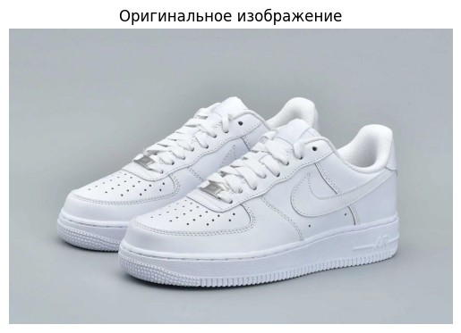
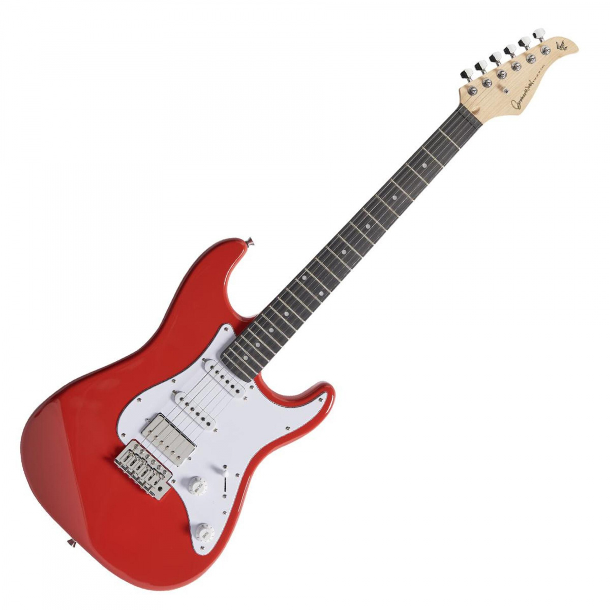

1 сентября, 2025
Путешествие в тысячу миль начинается с одного шага (Лао Цзы)
Оставляю в прошлом скучную неинтересную локальную файловую систему ради Всемирной паутины.
Иконки Нового года
Видео: Новогодняя ёлка с золотыми украшениями
26 ноября, 2025
Я сделала Новогодние кроссворды для сайта Сайт моего друга.
Русский кроссворд |
Английский кроссворд |
Поздравительный кроссворд 2026 |
Главная
03.12, 2025
Путешествие в тысячу миль начинается с одного шага (Лао Цзы)
Поздравление с Наступающим 2026 годом читайте здесь.
15 декабря, 2025
✨ Рождественская колядка
🎥 Видео |
📜 Текст колядки
Открыть PDF
12.01, 2026
Напишите мне
Доменное имя: adya228.github.io
Разберём его по уровням DNS-иерархии (справа налево):
- Корневой домен:
.
- Домен верхнего уровня (TLD):
.io
- Домен второго уровня (SLD):
github.io
- Поддомен:
adya228
17.01, 2026
Решение задач по шифру Цезаря
1. Определение ключей шифра Цезаря
а. Открытый текст: АПЕЛЬСИН → Шифротекст: САЦЬНВЩЮ
Ключ: k = 18
б. Открытый текст: АБРИКОС → Шифротекст: ЫЬЛГЕЙМ
Ключ: k = 28
2. Расшифровка сообщений (ключ неизвестен)
а. Шифротекст: ФХНЗКЧ
Расшифровка: ПРИВЕТ (k = 5)
б. Шифротекст: ЦЩЕБФ
Расшифровка: ВЕСНА (k = 20)
3. Шифрование фамилии с заданным ключом
Фамилия: Анисимова, ключ: k = 10
Шифротекст: КЧТЫТЦШМК
Решено с использованием 32-буквенного русского алфавита (без «Ё»).
Дата решения: 17 января 2026 г.
21.01, 2026
Криптография RSA
Задание по RSA
Учебный пример (p=3, q=5):
- Открытый ключ:
(n=15, e=3)
- Закрытый ключ:
(n=15, d=3)
Реальный пример (RSA-2048): n — произведение двух ~309-значных простых чисел (~618 цифр).
n = n_real = 25195908475657893494027183240048398571429282126
25195908475657893494027183240048398571429282126204032
8934940271832400483985714292821262040320277773512351
832400483985714292821262040320277773512351251959084
75652519590847565789349402718324004839857142928212620
84756525195908475657893494027183240048398578475652519
590847565789349402718324004839857847565251959084756578
14.02.2026
Топ-3 предсказаний кроссовки:
- running shoe: 99.45%
- shoe store: 0.27%
- clogs: 0.15%

Топ-3 предсказаний собака:
- Labrador Retriever: 89.02%
- Golden Retriever: 7.58%
- Chesapeake Bay Retriever: 0.32%
Топ-3 предсказаний гитара:
- electric guitar: 99.87%
- acoustic guitar: 0.13%
- banjo: 0.01%

20.02.2026
Вопрос пользователя: Сколько ждать мой заказ?
Найден FAQ-вопрос: Как быстро доставляется заказ? (sim=0.706)
Ответ бот-FAQ: Наш стандартный срок доставки — 3–5 рабочих дней.
Вопрос пользователя: Гарантия на товар?
Найден FAQ-вопрос: Где гарантия на товар? (sim=0.602)
Ответ бот-FAQ: Гарантия 1 год, условия в документации.
Вопрос пользователя: Можно сделать возврат?
Найден FAQ-вопрос: Можно ли вернуть товар обратно? (sim=0.776)
Ответ бот-FAQ: Да, возврат возможен в течение 14 дней.
Вопрос пользователя: Как оплатить?
Найден FAQ-вопрос: Как оплатить заказ? (sim=0.922)
Ответ бот-FAQ: Оплата заказа: картой онлайн, электронным кошельком, при получении или в рассрочку. Доступные способы зависят от магазина.
25.03.2026
Показатель точности модели по выдаче кредита
0.69
🔮 ПРОГНОЗ ДЛЯ НОВОГО КЛИЕНТА
Примеры прогнозов
Клиент: Возраст=25, Стаж=7 лет, ДТП=0
Решение: ❌ ОТКАЗ
Вероятность одобрения: 42.86%
Вероятность отказа: 57.14%
Клиент: Возраст=19, Стаж=1 лет, ДТП=3
Решение: ❌ ОТКАЗ
Вероятность одобрения: 0.00%
Вероятность отказа: 100.00%
Клиент: Возраст=45, Стаж=20 лет, ДТП=1
Решение: ✅ ОДОБРЕНО
Вероятность одобрения: 100.00%
Вероятность отказа: 0.00%
Клиент: Возраст=65, Стаж=40 лет, ДТП=2
Решение: ❌ ОТКАЗ
Вероятность одобрения: 20.00%
Вероятность отказа: 80.00%
(np.int64(0), array([0.8, 0.2]))